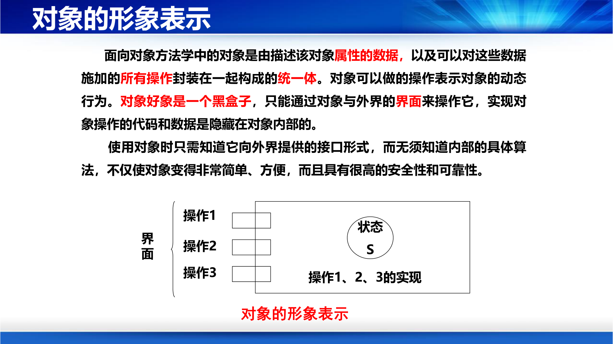
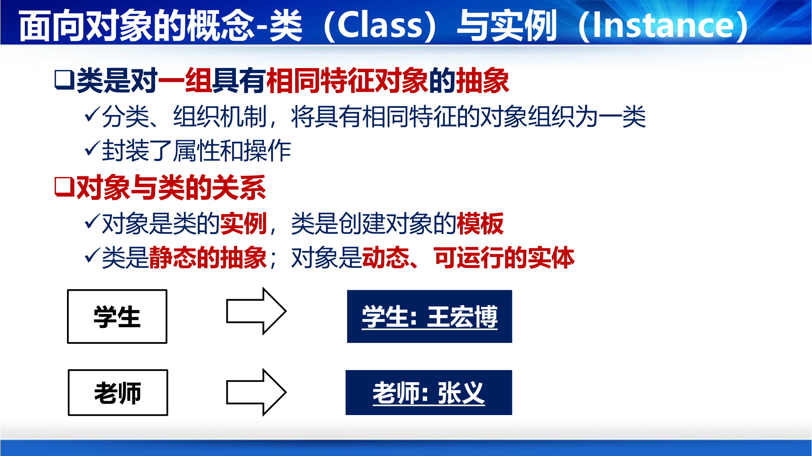
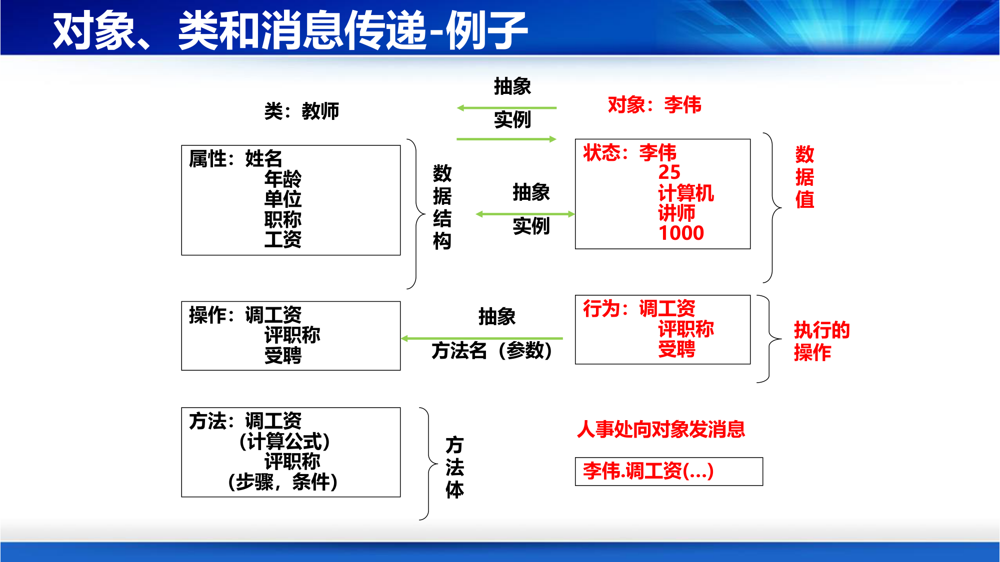

第 0 章的 0.3 已经把对象、类、消息、多态讲成了骨架，并留下一句"第 4 讲那节只需要看多态的误区和覆盖 vs 重载"。这一节就是那个"那节"：按课件第 41–71 页的原始顺序，把骨架补成可以落笔、可以答题的细节。课件在这里用了三十页、四段代码和一个遥控器类比，光有骨架是接不住这些内容的。
课件第 41 页（第 48 页又原样重复了一次）把面向对象的概念分成"基本"和"高阶"两层，一共十个：
| 层 | 概念 | 英文 | 一句话 | 课件页 |
|---|---|---|---|---|
| 基本 | 对象 | Object | 具体、有意义的实在实体，属性值构成它的状态 | 42 |
| 基本 | 属性 | Attribute | 对象的性质，其值定义对象状态 | 42 |
| 基本 | 方法（操作） | Method / Operation | 对象的行为，表示对象对外提供的服务 | 42 |
| 基本 | 类 | Class | 对一组具有相同特征对象的抽象 | 44 |
| 基本 | 实例 | Instance | 类的具体对象，类是创建它的模板 | 44 |
| 基本 | 消息 | Message | 一个对象请求另一个对象提供服务的唯一方式 | 45 |
| 高阶 | 封装 | Encapsulation | 清晰边界 + 明确接口 + 受保护的内部实现 | 49 |
| 高阶 | 继承 | Inheritance | 类与类之间的一般—特殊关系，子类共享父类特性 | 50 |
| 高阶 | 多态 | Polymorphism | 同一条消息，不同的对象做出不同的响应 | 53 |
| 高阶 | 重载 | Overload | 同一个类里多个同名但参数不同的操作 | 70 |
补这张清单里藏着一个顺序陷阱：课件把"重载"列进高阶概念，却没有列"覆盖（Override）"。原因是覆盖在第 69 页才出现，而且它不是独立概念——它是多态三个条件里的第一条（"父类包含了一个被子类覆盖的方法"）。先有覆盖，才谈得上多态；重载和多态没有关系。 这个先后关系，清单本身看不出来，下面几节按课件页序把它补上。
课件第 42 页先给对象下定义：对象是个体或事物的抽象表示，有属性（对象的性质，其值定义对象状态）和操作（也称方法，对象行为，表示对象提供的服务）。例子是一辆汽车——属性是发动机、变速箱、轮胎、车身、座椅，方法是启动、加速、刹车、保养、修理。
第 43 页换了一个更工程化的说法，把对象画成三层：
课件用一句话收束："对象好像是一个黑盒子，只能通过对象与外界的界面来操作它，实现对对象操作的代码和数据是隐藏在对象内部的。"

补这三块在后几讲各画一张图，别混：界面对应类图里"操作"那一格（第 5 讲类图的三部分）；状态 S 对应状态图里的"状态"（第 5 讲动态模型）；实现属于代码，画图时根本不出现。所以课件说"使用对象时只需知道接口形式"——图上本来就只画接口。
补"简单、方便、安全、可靠"这四个词不是形容词，是因果关系：调用方只依赖签名（界面），实现换成什么算法都不影响调用方，于是改动被关在对象内部。第 6 讲把这件事上升为"信息隐藏"原则，第 6 讲的内聚耦合刻度也是在量"这条边界修得干不干净"。
课件第 44 页的定义很短：类是对一组具有相同特征对象的抽象，是分类与组织机制，封装了属性和操作；对象是类的实例，类是创建对象的模板。紧接着一句对照最值得记：
类是静态的抽象；对象是动态、可运行的实体。
课件的例子是"老师 → 老师：张义""学生 → 学生：王宏博"——左边是类，右边是带名字的实例。

第 47 页把这一层关系算成了明账，用"教师"类生成"李伟"对象：
| 类里写的（抽象） | 对象里存的（实例） | 教师 → 李伟 |
|---|---|---|
| 数据结构：属性声明 | 数据值 | 姓名 / 年龄 / 单位 / 职称 / 工资 → 李伟 / 25 / 计算机 / 讲师 / 1000 |
| 操作：方法名（参数） | 可接收的行为入口 | 调工资(…) / 评职称 / 受聘 |
| 方法：方法体（公式、步骤、条件） | 真正执行的操作 | 调工资的计算公式、评职称的步骤与条件 |
图的下方是消息：人事处向对象发消息 李伟.调工资(...)。

补这张图其实是三份账本，对应三次翻译：属性声明（数据结构）→ 属性值（数据值），是抽象 ↔ 实例化；方法名（参数）→ 行为的入口，是接口 ↔ 实现；方法体 → 执行的操作，是声明 ↔ 运行。课件把"调工资"写了两遍不是笔误——上一遍是"对象能接收哪个消息"，下一遍是"收到之后按什么公式算"。
补方向感很重要：需求分析阶段只做向上的箭头（课件第 5 讲就是"从名词找类"，把现实里的实体归纳成类）；编码阶段才做向下的箭头（new）。在需求阶段就想着怎么写类，会提前锁死实现——这也是第 5 讲把"分析类"和"设计类"分成两套模型的原因。
课件第 45 页：消息传递是实现对象间通讯和协作的基本手段，一个对象向另一个对象发送消息来请求其服务。消息的写法固定为：
接收对象名.消息名(参数)
课件给的例子是"学生:王宏博 → 课程注册中心 : registerCourse(course-name)"。消息分两类：同步消息（请求者需要等待响应者的处理结果）和异步消息（发出后继续工作，无需等待）。
第 46 页把一条消息拆成三段，用 C++ 的写法 MyCircle.Show(Green) 演示——MyCircle 是半径 4、圆心 (100,200) 的 Circle 类对象：
MyCircle：接收消息的对象的名字；Show：消息选择符（消息名）；Green：消息的变元（参数）。对象收到这条消息后，"将执行在 Circle 类中定义的 Show 操作"。
补消息和函数调用差在哪？ 函数调用是"我指定这段代码去跑"，消息是"我请求那个对象帮我做"。差别在谁来定实现：消息只规定"要什么"（选择符 + 变元），"怎么做"由接收对象按自己的类决定。下一节多态之所以能成立，语言学基础就在这里——同一条 draw() 消息发给矩形和三角形，两个对象各自执行自己的版本（课件第 53 页的例子）。
补同步/异步在第 5 讲会变成箭头形状：顺序图里实心箭头表示同步（等返回），开叉箭头表示异步（不等返回）。0.3 已经给过"叫人吃饭"的类比，这里只补一句工程判断：会阻塞调用方的是同步，会丢进队列的是异步——所以实时控制多用同步，通知类多用异步。
课件第 49 页把封装定义成"把数据和实现操作的代码集中起来放在对象内部"，并给出三个必要条件：
补和 0.3 的分工：0.3 已经讲清了"封装 ≠ 信息隐藏"（封装是语言机制，信息隐藏是设计原则），这里补的是三个条件各自管什么——边界管"哪些数据和方法属于这个对象"；接口就是上一节图里的"界面"，是外界唯一能碰的地方；受保护管"实现的改动不外溢"。三者缺一：有边界无接口是"锁死"，有接口无保护是"纸糊的封装"。
补给一个可以当检查表的判据：把某个方法的实现整段换掉（只保留签名），调用方要不要改代码？不用改 = 封装合格；要改 = 说明内部细节漏到接口上了（比如方法名里带着 sortByArrayIndex 这种实现痕迹）。这个判据在第 6 讲的"信息隐藏"和第 10 讲的"可维护性"里都会再用一次。
课件第 50 页：继承表示类与类之间一般与特殊的关系，模拟现实世界类之间的"遗传"；子（特殊）类可共享父（一般）类的属性和操作，也可以有自己的独特属性和操作；借助继承可以形成系统的层次化类结构（例子是"课程 → 公共课 / 专业课"）。
第 51 页讲传递性：如果类 C 继承类 B、类 B 继承类 A，则类 C 继承类 A。这一页的示意图值得多看一眼——类 B 的实例 b1 里，同时存在"A 的实例变量"和"B 的实例变量"两块，即继承来的是对象体内真实的一部分状态，不是"复制了一份代码文本"。
补这解释了继承的一个隐性成本：父类每多一个字段，所有子类对象都跟着变大；父类的字段布局一改，子类的内存布局全部重排（这也是为什么很多语言不允许随便改已发布父类的字段）。第 6 讲说"继承是最强的耦合"，根子在这个结构里。
第 52 页区分两种继承：单重继承（一个子类只有一个父类）与多重继承（子类拥有多个父类）。
补课件没讲但常考的那一问：为什么 Java 只支持单重继承？ 多重继承会带来"菱形问题"——B、C 都继承 A 并各自覆盖同一个方法，D 同时继承 B 和 C 时，A 那份到底该用谁的？C++ 的解法是虚继承，Java 的解法是类只留单继承、把多继承的能力放到接口上。记住这个因果，比记"Java 不支持多继承"有用。
课件第 53 页给出多态的三个特征（0.3 已逐条列过，这里只提醒它们是同时成立的三个条件）：
同一页还多给了一样东西，0.3 没写：多态的执行方式是"从具体子类开始，沿继承结构向上找，直至发现为止"。
补这句话是"方法查找"（method lookup）的朴素描述：先看子类有没有这个方法，有就用子类的；没有就往上找父类。所以"子类没覆盖"时行为退回父类版本——多态不会因为没覆盖而报错，只会"按父类的方式做"。C++ 的虚函数表、Java 的 invokevirtual，本质都是把这次"向上找"提前做成表。
课件还给了多态的目的：增加灵活性、减少数据冗余、显著提高可重用性和可扩充性。
补把"目的"翻译成需求分析的语言：多态让"新增一种类型"变成"加一个子类"而不是"改所有分支判断"。需求阶段最容易出的问题是"把会变的东西写死在流程里"，而多态正是在设计阶段给"会变的部分"留的口子——第 7 讲的设计模式几乎全是这个口子的不同用法。
课件第 54–68 页用了五页代码和六页遥控器类比，就为讲清一件事：引用和对象是两个东西。
实例 1（第 54–58 页）：一个方法，三种结果。 A、B、C 三个类，B、C 继承 A 并各自覆盖 m1()。第 55 页的图把对象内部摊开：B 对象里同时有"从 A 继承来的 m1()"和"自己覆盖的 m1()"两份，C 对象同理。于是同一个 m1() 消息发给 a、b、c，得到三种输出。
补这就是"多态"三个字的字面含义：同一个消息（形），不同的对象（态）。注意图上"继承来的那份"依然在对象里、依然可以被父类代码调到（super.m1()）——覆盖不是删除，是"优先用新的"。
实例 2（第 59–60 页）：this 指针指向谁。 A 类里 fun2() 的方法体只有一句 this.fun1();，B 类覆盖了 fun1()。执行 A a = new B(); a.fun2(); 时，控制台打印的是 B 版本的 fun1()。
补结论比代码重要：this 指的是"接收消息的那个对象"，不是"写下这行代码的类"。所以父类里写 this.fun1()，跑起来会落到子类的版本上——有了这一点，父类才能写出"骨架固定、细节交给子类"的代码。第 7 讲的模板方法模式就是这么来的：父类定流程，子类填步骤。
实例 3（第 60、62 页）：两个"误区"。 第 60 页先分清两个动作：对象声明是"为引用创建一个空间"（Tester t1;），对象生成是"创建一个类的实例，为它分配空间，并把地址赋给引用"（t1 = new Tester();）。第 62 页给了两段只差一个字的代码：
A a = new B(); B b = (B)a; // 第一段：a 这个 A 类型引用，指向的是 B 类型对象
A a = new A(); B b = (B)a; // 第二段：a 指向的是 A 类型对象，却硬转成 B 类型引用
第一段能跑：向下转型后，b 有权利调用 B 中非共有的方法。第二段会出错：b 的声明是 B，编译器允许你发"调用 b.fun3()"的命令，但 a 实际指向的 A 对象体内根本没有 fun3() 这段代码。
课件把结论写成一句必须背下来的话：
"引用"所能够调用的"方法"取决于"引用"的类型，而该"方法"如何具体实现取决于"对象"的类型。
补在 Java 里，第二段是强转那一刻就抛 ClassCastException（运行期类型检查），而不是等调用 fun3() 才炸；C++ 的 static_cast 不检查，属于未定义行为。课件写"就会出错"是对的，只是没说清出错时机——考试若问"什么时候发现"，答案取决于语言。
遥控器类比（第 63–68 页）：老遥控器—老空调、老遥控器—新空调、新遥控器—新空调、新遥控器—老空调，四种组合对应四种代码写法。0.3 已经给了那张四行表，这里只补"为什么"：
新遥控器配老空调出错，正是因为"名单上有、机器上没有"。
课件第 69 页讲覆盖（Override）：子类增加或重新定义所继承的属性或方法，用新定义的覆盖父类的。代码里 B 继承 A 并重写了 getValue()——方法名相同、参数表相同、返回值类型相容。
第 70 页讲重载（Overload）：一个类中有多个同名操作，但它们在操作数或操作数类型上有区别，系统根据实参调用不同方法。代码里 A 类有两个 setValue：setValue(int agePara) 和 setValue(String namePara)。
第 72 页用 + 运算符收尾：同一个 +，两侧是整数时做加法，是字符串时做拼接。
补0.3 已经给了覆盖 vs 重载的对照表，这里补的是表上没有的那一列——绑定时机：
| 覆盖 Override | 重载 Overload | |
|---|---|---|
| 绑定时机 | 运行期动态绑定（看对象） | 编译期静态绑定（看参数） |
| 决定因素 | 对象的实际类型 | 实参的个数与类型 |
| 返回类型 | 必须相容（Java 允许协变返回） | 不参与区分，只靠返回类型不同不构成重载 |
| 限制 | final / static / private 方法不能覆盖；访问权限不能收紧 |
同一类内即可，和继承无关 |
补+ 运算符这个例子值得多说一句：它说明"重载是编译期就把答案定死的"——写 1 + 2 和写 "a" + "b"，编译器在编译时就知道要调哪个版本，运行时没有"看情况"的余地。这也正好反过来印证多态：多态是运行期才定，重载是编译期就定，两者只是名字像，机制完全相反。
这十个概念是后面所有图的词汇表：第 5 讲的类图（类、属性、操作、六种关系）、对象图（实例）、状态图（状态 S 怎么迁移）、顺序图（消息，同步还是异步），全都是这一节的直接延伸；第 6 讲的内聚耦合、第 7 讲的设计模式，则是"用这套词汇把设计做好"的方法。
如果只记两条，记这两条：